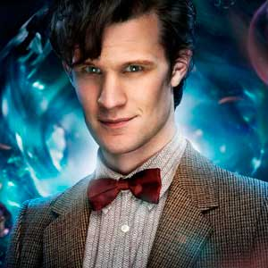

Portrayed by Matt Smith
|  |
The Eleventh Doctor is the eleventh incarnation of the protagonist of the BBC television science fiction series Doctor Who. He is played by Matt Smith, and was introduced at the conclusion of the show's New Year's Day special in 2010, taking over the role from David Tennant, who portrayed the Tenth Doctor. Smith is scheduled to portray the character past the show's 50th anniversary and until at least 2014. Within the series' narrative, the Doctor is a centuries-old alien, a Time Lord from the planet Gallifrey, who travels in time and space in his TARDIS, frequently with companions. When the Doctor is critically injured, he can regenerate his body but in doing so gains a new physical appearance and with it, a distinct new personality. Smith portrays the eleventh such incarnation, a quick-tempered but compassionate man whose youthful appearance is at odds with his more discerning and world-weary temperament. |